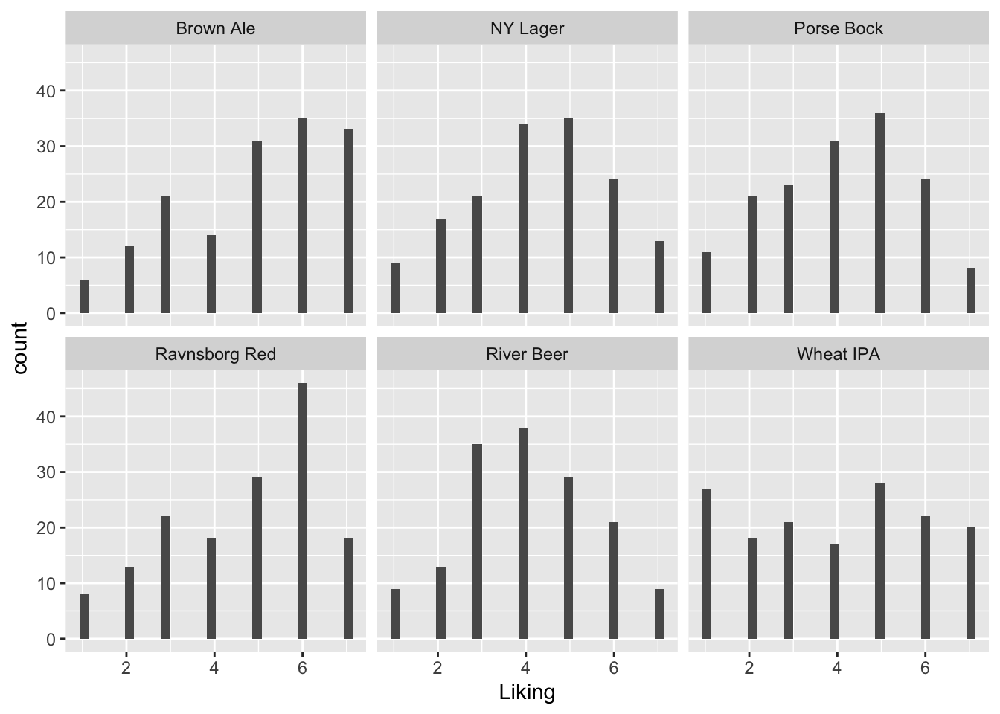

Chapter 15 CATA and Hedonics
Certain attributes like floral is wanted in beer, while others may be unwanted, and hence detection of these attributes can have hedonic impact. This analysis can be evaluated for each attribute separately or all collectively using PCA.
These data appears as two separate dataset, and hence need to be joint:
library(data4consumerscience)
library(tidyverse)
data("beercata")
data("beerliking")
xbeer <- beerliking %>%
left_join(beercata, by = c('Beer','Consumer.ID'))15.1 Individual attributes and liking
15.1.1 An example with Refreshing
ggplot(data = xbeer, aes(Beer, Liking, fill = factor(S_Refreshing))) +
geom_boxplot() 
From this plot it seems as if checking of the attribute Refreshing leads to higher liking score. Further, this is even more so for light-colored beers like Wheat IPA and Porse Bock.
A model capturing this phenomena could be a linear model with interactions:
library(lme4)
library(lmerTest)
mdl <- lmer(data = xbeer, Liking~factor(S_Refreshing)*Beer + (1|Consumer.ID))
anova(mdl)## Type III Analysis of Variance Table with Satterthwaite's method
## Sum Sq Mean Sq NumDF DenDF F value Pr(>F)
## factor(S_Refreshing) 316.30 316.30 1 901.60 141.9478 < 2.2e-16 ***
## Beer 75.61 15.12 5 783.91 6.7864 3.309e-06 ***
## factor(S_Refreshing):Beer 48.91 9.78 5 877.05 4.3894 0.0005933 ***
## ---
## Signif. codes: 0 '***' 0.001 '**' 0.01 '*' 0.05 '.' 0.1 ' ' 1All terms are significant and we are interested in the individual beer effects. We re-parametrice the model by removing the intercept (adding -1 at the end of the formula) and not including the main effect of S_Refreshing (change * to : in interaction, and add Beer as main effect).
mdl <- lmer(data = xbeer, Liking~Beer + factor(S_Refreshing):Beer + (1|Consumer.ID) - 1)
summary(mdl)## Linear mixed model fit by REML. t-tests use Satterthwaite's method ['lmerModLmerTest']
## Formula: Liking ~ Beer + factor(S_Refreshing):Beer + (1 | Consumer.ID) - 1
## Data: xbeer
##
## REML criterion at convergence: 3446.5
##
## Scaled residuals:
## Min 1Q Median 3Q Max
## -2.87114 -0.67445 0.08872 0.70059 2.46378
##
## Random effects:
## Groups Name Variance Std.Dev.
## Consumer.ID (Intercept) 0.2706 0.5202
## Residual 2.2283 1.4928
## Number of obs: 920, groups: Consumer.ID, 155
##
## Fixed effects:
## Estimate Std. Error df t value Pr(>|t|)
## BeerBrown Ale 5.1235 0.1713 905.0570 29.905 < 2e-16
## BeerNY Lager 4.5212 0.1471 891.2430 30.733 < 2e-16
## BeerPorse Bock 4.2747 0.1322 869.6115 32.335 < 2e-16
## BeerRavnsborg Red 4.9078 0.1350 874.8096 36.349 < 2e-16
## BeerRiver Beer 4.2451 0.1332 872.0429 31.864 < 2e-16
## BeerWheat IPA 4.2981 0.1329 871.0139 32.332 < 2e-16
## BeerBrown Ale:factor(S_Refreshing)1 -0.3340 0.1694 883.0668 -1.972 0.048964
## BeerNY Lager:factor(S_Refreshing)1 -0.5176 0.1449 882.6727 -3.573 0.000372
## BeerPorse Bock:factor(S_Refreshing)1 -0.7714 0.1297 883.4564 -5.947 3.92e-09
## BeerRavnsborg Red:factor(S_Refreshing)1 -0.7095 0.1326 883.8535 -5.352 1.11e-07
## BeerRiver Beer:factor(S_Refreshing)1 -0.6040 0.1308 884.3471 -4.618 4.44e-06
## BeerWheat IPA:factor(S_Refreshing)1 -1.2025 0.1304 882.8483 -9.219 < 2e-16
##
## BeerBrown Ale ***
## BeerNY Lager ***
## BeerPorse Bock ***
## BeerRavnsborg Red ***
## BeerRiver Beer ***
## BeerWheat IPA ***
## BeerBrown Ale:factor(S_Refreshing)1 *
## BeerNY Lager:factor(S_Refreshing)1 ***
## BeerPorse Bock:factor(S_Refreshing)1 ***
## BeerRavnsborg Red:factor(S_Refreshing)1 ***
## BeerRiver Beer:factor(S_Refreshing)1 ***
## BeerWheat IPA:factor(S_Refreshing)1 ***
## ---
## Signif. codes: 0 '***' 0.001 '**' 0.01 '*' 0.05 '.' 0.1 ' ' 1
##
## Correlation of Fixed Effects:
## BrBrwA BrNYLg BrPrsB BrRvnR BrRvrB BrWIPA BBA:(S BNYL:( BPB:(S BRR:(S BRB:(S
## BeerNYLager 0.069
## BeerPorsBck 0.080 0.090
## BrRvnsbrgRd 0.079 0.089 0.099
## BeerRiverBr 0.076 0.090 0.099 0.096
## BeerWhetIPA 0.078 0.091 0.100 0.099 0.099
## BrBA:(S_R)1 -0.664 0.000 -0.004 -0.005 0.000 -0.001
## BNYL:(S_R)1 0.001 -0.496 0.001 -0.002 -0.001 -0.002 0.000
## BrPB:(S_R)1 -0.009 0.002 -0.268 -0.003 -0.002 0.000 0.014 -0.005
## BrRR:(S_R)1 -0.009 -0.003 -0.003 -0.332 0.003 -0.004 0.014 0.006 0.010
## BrRB:(S_R)1 0.003 -0.002 -0.001 0.004 -0.293 -0.001 -0.001 0.004 0.008 -0.009
## BWIPA:(S_R) -0.002 -0.003 0.001 -0.004 -0.001 -0.276 0.003 0.006 -0.002 0.012 0.004Here we see that the attribute will increase the liking by \(0.7\) points for Brown Ale and up to \(2.4\) points for Wheat IPA.
15.1.2 All attributes
We can visualize for all attributes:
g1 <- xbeer %>%
gather(cata, val,S_Flowers:S_Vinous) %>%
ggplot(data = ., aes(Beer, Liking, fill = factor(val))) +
geom_boxplot() +
theme(axis.text.x = element_text(angle = 79, hjust = 1), legend.position = 'bottom') +
facet_wrap(~cata, ncol = 4)
g1 
For each attribute a interaction model will be used to qualify further analysis.
library(broom)
library(broom.mixed)
tb <- xbeer %>%
gather(cata, val,S_Flowers:S_Vinous) %>%
group_by(cata) %>%
do(lmer(data = ., Liking~factor(val)*Beer + (1|Consumer.ID)) %>% anova %>% tidy)This table has both main effect of the beer and cata-attribute as well their interaction.
This print out shows the attributes related to liking - overall.
tb %>%
filter(term=='factor(val)') %>%
arrange(p.value)## # A tibble: 27 × 8
## # Groups: cata [27]
## cata term sumsq meansq NumDF DenDF statistic p.value
## <chr> <chr> <dbl> <dbl> <int> <dbl> <dbl> <dbl>
## 1 S_Refreshing factor(val) 316. 316. 1 902. 142. 1.70e-30
## 2 S_Sour factor(val) 129. 129. 1 905. 51.2 1.73e-12
## 3 S_Caramel factor(val) 23.6 23.6 1 899. 8.92 2.90e- 3
## 4 S_Herbs factor(val) 23.3 23.3 1 905. 8.84 3.02e- 3
## 5 S_Sweet factor(val) 21.8 21.8 1 897. 8.22 4.25e- 3
## 6 S_Regional spices factor(val) 19.4 19.4 1 903. 7.43 6.54e- 3
## 7 S_Sparkling factor(val) 19.3 19.3 1 865. 7.33 6.90e- 3
## 8 S_Bitter factor(val) 17.9 17.9 1 907. 6.76 9.45e- 3
## 9 S_Dessert spices factor(val) 16.5 16.5 1 908. 6.28 1.24e- 2
## 10 S_Liquor factor(val) 16.0 16.0 1 908. 6.00 1.45e- 2
## # ℹ 17 more rowsThe strongest ones are S_Refreshing, S_Sour, etc. while the presence of S_Warming, S_Pungent etc. has no effect on liking.
tb %>%
filter(term=='factor(val):Beer') %>%
arrange(p.value) %>%
head(6)## # A tibble: 6 × 8
## # Groups: cata [6]
## cata term sumsq meansq NumDF DenDF statistic p.value
## <chr> <chr> <dbl> <dbl> <int> <dbl> <dbl> <dbl>
## 1 S_Refreshing factor(val):Beer 48.9 9.78 5 877. 4.39 0.000593
## 2 S_Fruity factor(val):Beer 55.8 11.2 5 873. 4.30 0.000711
## 3 S_Nuts factor(val):Beer 32.2 6.44 5 872. 2.44 0.0329
## 4 S_Smoked factor(val):Beer 30.2 6.05 5 876. 2.29 0.0441
## 5 S_Citrus fruit factor(val):Beer 29.2 5.84 5 879. 2.21 0.0510
## 6 S_Regional spices factor(val):Beer 27.8 5.57 5 873. 2.13 0.0595This table shows that S_Refreshing, S_Fruity, etc. has differential impact on the liking dependent on the beer it is detected in.
A deep dive into the effect can be done using the setup with a single variable above using the tidyverse and broom framework.
tb2 <- xbeer %>%
gather(cata, val,S_Flowers:S_Vinous) %>%
group_by(cata) %>%
do(lmer(data = ., Liking~Beer + factor(val):Beer + (1|Consumer.ID) - 1) %>% tidy(conf.int = T))tb2 %>%
filter(str_detect(term,'factor')) %>% # filter to get individual beer differences.
filter(cata %in% tb$cata[tb$term=='factor(val):Beer' & tb$p.value<0.05]) %>% # include only interesting ones.
ggplot(data = ., aes(substr(term,5,14), estimate, ymin = conf.low, ymax = conf.high)) +
geom_point() +
geom_errorbar() + facet_wrap(~cata) +
geom_hline(yintercept = 0) + theme(axis.text.x = element_text(angle = 79, hjust = 1)) +
xlab('Beer')
The interpretation is that detecting Smoked in e.g. Ravnsborg Red tends to be positive, while it is pretty bad in Wheat IPA. Similarly, Fruity is related to higher liking in Wheat IPA and Porse Bock but a bad thing in River Beer. Nutty only matters on liking in Ravnsborg Red and River beer.
15.2 PCA on CATA and Liking
A PCA on the agglomerated CATA counts including the liking will reveal the attributes associated with the individual products, and which attributes are correlated with the liking.
xbeeragglom <- xbeer %>%
gather(cata, val,S_Flowers:S_Vinous, Liking) %>% #looong format for all variables
group_by(Beer,cata) %>% # summarize for each beer type
dplyr::summarise(yy = mean(val, na.rm = T)) %>%
spread(cata,yy) # wide formatmdlPCAcataliking <- prcomp(xbeeragglom[,-1], scale. = T)
ggbiplot::ggbiplot(mdlPCAcataliking, labels = xbeeragglom$Beer)
The attributes Bean, Caramel, Warming, Aromatic etc is associated to the beer Brown ale, while Berrie, Dessert, Pungent, etc. is characteristic of Wheat IPA. Further, Liking is associated with all attributes on the first component, such as Aromatic, Warming, etc.
15.2.1 A beer centric model
The above PCA shows general good- and bad attributes in terms of liking. However, the univariate analysis indicated that for some beers e.g. Smoked was a good thing while for others not so much.
For that reason we can build a PCA for each beer to see which attributes that drives liking
xbeer <- xbeer[complete.cases(xbeer),]
PCAmdl_RR <- prcomp(xbeer[xbeer$Beer=='Ravnsborg Red',14:41], scale. = T)
ggbiplot::ggbiplot(PCAmdl_RR)
Caramel, Savoury spices and Reefreshing is promoting liking, while Sour is not.